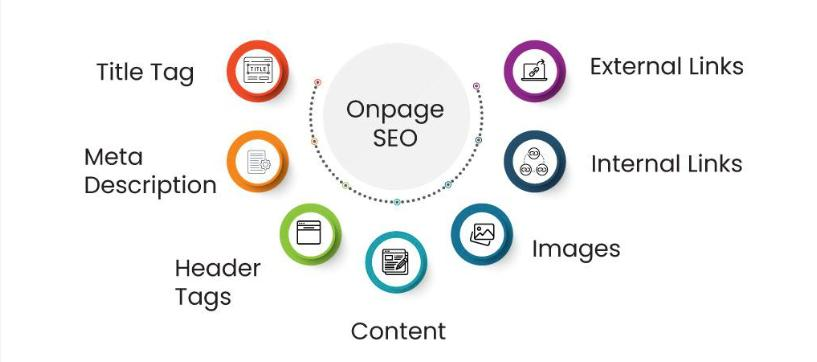
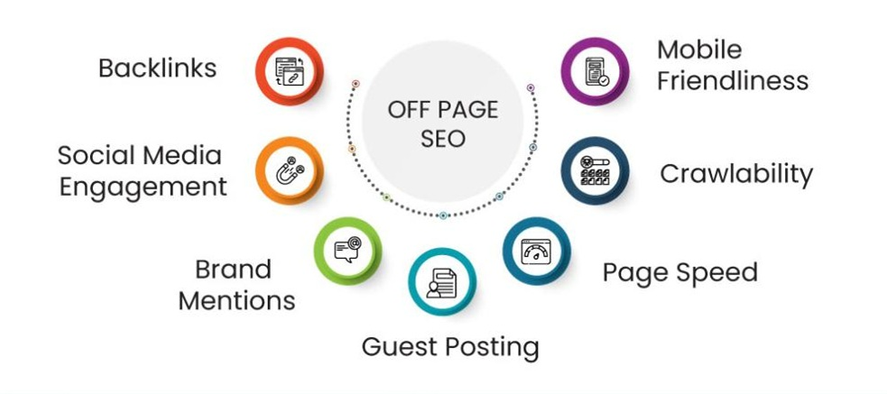
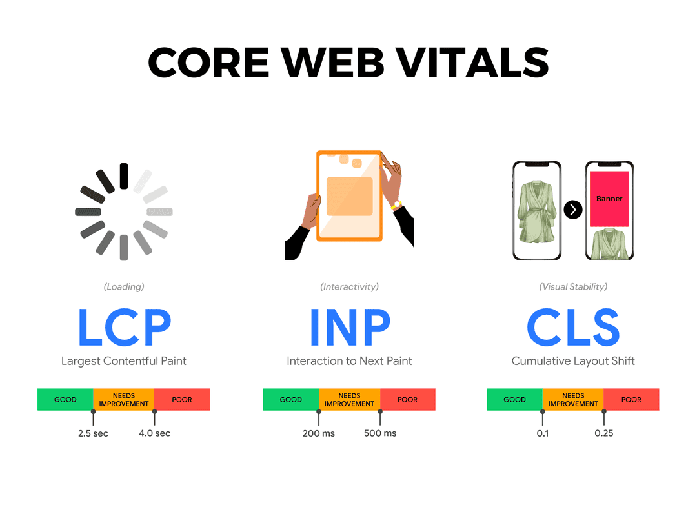

Core SEO Concepts
Below are several foundational ideas that guide effective Search Engine Optimization (SEO). These principles help websites rank higher in search results, attract more users, and improve usability.
Search Engine Results Page (SERP)
Image source: VWO
The page displayed by search engines after a user submits a query. Effective SEO strategies aim to appear within the first few results of the SERP.
Keywords

Image source: Wordstream
Words or phrases users type into search engines. Selecting and integrating relevant keywords naturally within content improves visibility.
On-Page Optimization

Image source: Geeksforgeeks
Adjusting elements on a web page—such as titles, headers, meta tags, and internal links—to make it more understandable and attractive to search engines.
Off-Page Optimization

Image source: Netpeak Software
Actions taken outside of a website to improve its authority and reputation, such as link building and social sharing.
Backlinks

Image source: Backlinko
Links from other websites that point to your page. Quality backlinks from trusted sources signal credibility to search engines.
Indexing and Crawling

Image source: Moz
Search engines use automated bots to find (crawl) web pages and add them to a searchable index. Proper site structure and sitemaps help ensure all pages are indexed.
Core Web Vitals

Image source: The Nitrogen Platform
Performance metrics used by Google to evaluate user experience, focusing on loading speed, interactivity, and visual stability.